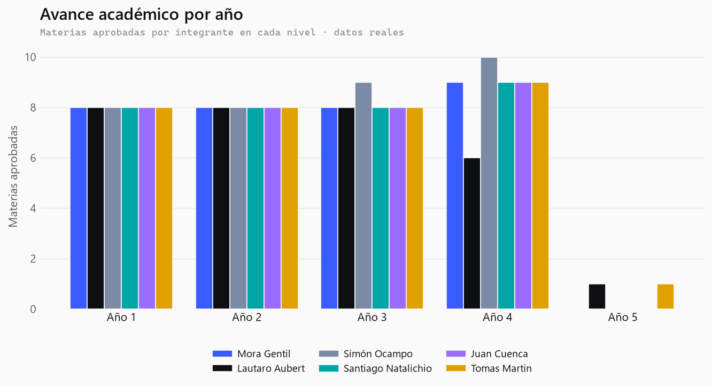
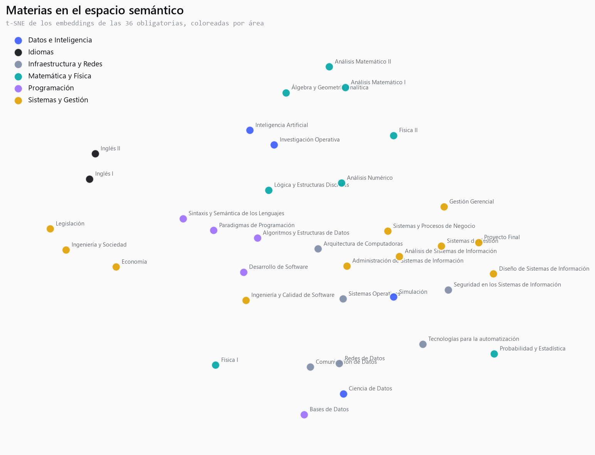
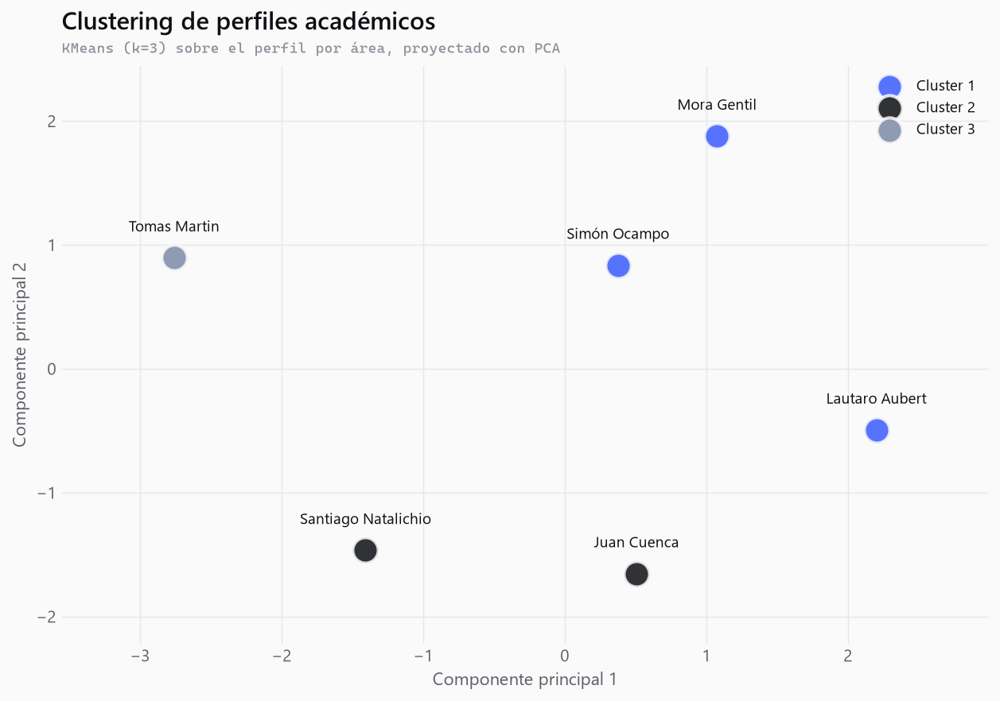

IA generativa que sintetiza artefactos académicos personalizados, anclados en el historial real del grupo y el plan de estudios.
"¿Qué notas tengo?" lo resuelve un SQL —por eso esos datos van en una base relacional—. Pero eso es lookup, no IA.

Cada etapa la construimos nosotros. El pipeline corre local; la generación, en GPU gratuita (Colab) o local. Persistencia híbrida: lo tabular en relacional (SQL exacto), la documentación en vectorial (semántico). El retrieval combina ambas.

Podés cursar Ciencia de Datos: cumplís las correlativas. Rendimiento sólido en Programación (media 8.4).
¡Vas muy bien! Tu base en Programación es una fortaleza real: Ciencia de Datos es el próximo paso natural.
Estás habilitado, pero arrastrás Matemática floja. Reforzala antes o vas a sufrir la cursada.
Mismos datos del contexto. Solo cambia el registro. Eso es generativo.
Cita las materias aprobadas reales, las correlativas y las notas. Genera el plan anclado.
Sin el historial privado, el modelo se generaliza o inventa materias que no existen.
Mismo pedido, un botón. La diferencia es el conocimiento privado.
Cuatro métricas en tres ejes: solapamiento (léxico/semántico), corrección factual (precisión) y juicio de un LLM (faithfulness). La estrella: cero notas inventadas con RAG. El valor absoluto tiene varianza; lo robusto es la dirección.

Gracias. ¿Preguntas?